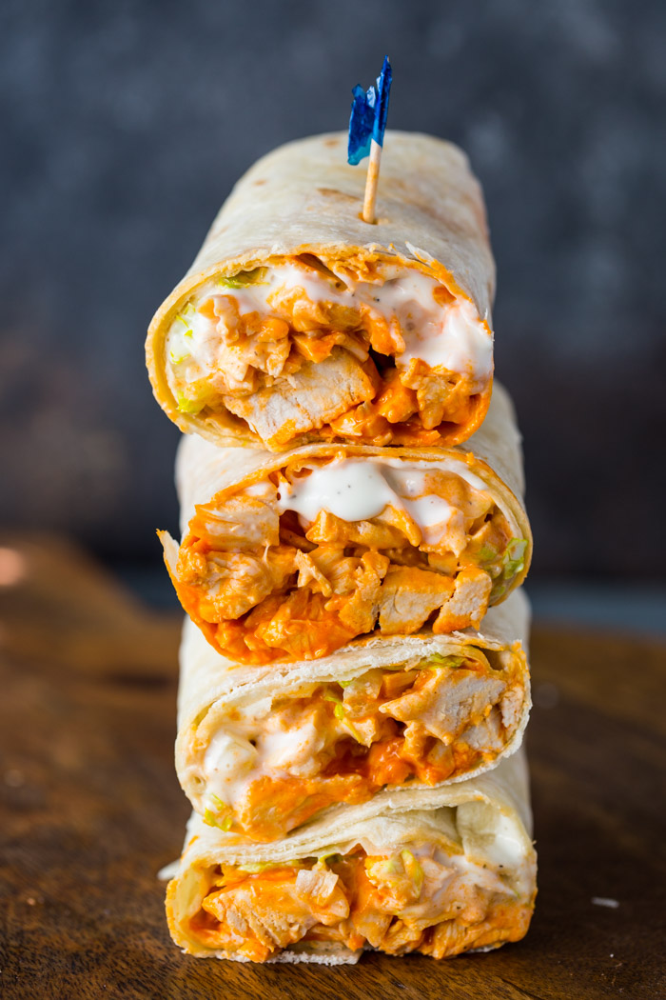

Buffalo Chicken Wraps

Description
This recipe is a protein-rich, easy to meal prep lunch wrap. Hidden proteins such as the protein tortilla wraps
and cottage cheese make this wrap low-calorie, high-protein, and perfect for cutting or weightloss.
Ingredients
- 1 cup low-fat cottage cheese
- 1/4 cup spicy buffalo sauce
- 2 oz cream cheese (or Neufchâtel cheese for a lower-fat option)
- 1 cup fat-free shredded mozzarella cheese
- 3 chicken breasts
- 5 protein tortilla wraps
- 2 Tbsp paprika
- 2 tsp garlic powder
- 2 Tsp ground cumin
- Salt and pepper to taste
Steps
- Preheat oven to 425°F
- While the oven is heating, prep chicken by mixing the cumin, garlic, salt, pepper and paprika. Generously coat
chicken and place on a parchment-paper lined baking tray. When the oven is ready, place chicken on middle rack
for 15-20min or until reaching an internal temp of 165°F. Remove and let rest.
- While chicken is baking, combine cottage cheese, cream cheese, and buffalo chicken sauce in a blender. Blend until smooth.
- After chicken cools, dice into small pieces, or about 1/2" cubes.
- In a medium-sized bowl, combine chicken, buffalo cheese sauce, and the fat-free mozzarella cheese.
- Finally, evenly distribute chicken mixture between the 5 torillas and wrap. To store, cover each wrap in foil and place in fridge.